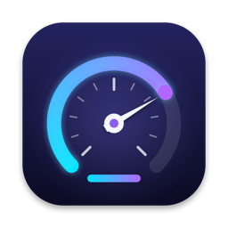

Support
MSRX Gauge
FUTURE. INTELLIGENCE. IMPACT.
A light system monitor that lives in the menu bar. CPU, memory, network, disk, battery, graphics and thermal state, with charts of the last minute or hour, a health check, alerts you set yourself, a PDF report and an on-device assistant. Everything stays on your computer.
Getting started
- Click the gauge in the menu bar to open the dropdown. Each card shows a reading and its last 60 seconds.
- Open Settings (the gear in the dropdown, or ⌘,) to choose what the menu bar shows: an icon only, one reading, or a compact strip of several.
- Turn on Open at login in Settings if you want the gauge there every time you start up.
- Alerts are all off until you turn them on in Settings → Alerts.
- The switch at the top of the dropdown changes the CPU, memory, battery and thermal charts between the last minute and the last hour. The health check above the cards says whether anything needs a look.
- Report (⌘R in the dropdown) builds a two-page system health report. Save it as a PDF or an image, or copy it as text.
- Ask (⌘K in the dropdown) answers questions such as “Why is my computer slow?” using the live readings and the last hour.
Questions
Why are there no temperatures or fan speeds?
Those values come from a sensor controller that apps from the App Store are not allowed to open. We tested it inside the app’s sandbox and the request is refused, so rather than guess or show made-up numbers, MSRX Gauge shows the system’s own thermal state (Normal, Warm, Hot, Critical), which is what the system uses to decide when to slow down to cool off.
Why does the free disk space differ from other tools?
For the startup disk, MSRX Gauge shows the space available for important use. That includes space the system can free on demand (for example caches and optimised storage), the same way the file browser counts it. Command-line tools often show less because they leave that space out.
How is “memory used” worked out?
Used = app memory + wired memory + compressed memory, the usual breakdown. Cached files are listed separately because the system gives that memory back the moment an app needs it. Memory pressure is the better sign of trouble: Normal is fine even when “used” looks high.
Alerts are on but no notification appears
Notifications may be turned off for MSRX Gauge. Settings → Alerts says so and has a button that opens the notification settings, where you can switch Allow notifications on. Use Send a test alert to check. Each alert shows once, waits until the reading has clearly recovered, and repeats at most every 15 minutes.
How much does the gauge itself use?
Very little. With the dropdown closed and a 2-second refresh it measured around 1% of one processor core and under 40 MB of memory on our test machine. Network, disk-speed and graphics readings are only taken while you can see them. Showing just the icon in the menu bar uses the least.
What is the Process Explorer button?
If MSRX Process Explorer is installed, the dropdown shows a button that opens it, so you can see which apps are busy. If it is not installed, the button does not appear.
Why can’t I use Ask?
Ask uses the language model built into the operating system, which runs on your computer. It needs system version 27 or later, a computer that supports the on-device model, and the model turned on in system settings. If any of those is missing, the Ask window says which, and everything else in MSRX Gauge keeps working. Answers come from a small model and can be wrong, so check anything important.
What does the report contain?
Page 1: the overall status, the health check (CPU, memory, disk, battery, temperature, restarts), facts about the computer, last-hour charts and the live readings at a glance. Page 2: every reading, with last-hour averages and peaks. The hour figures cover the time MSRX Gauge was running. The report is saved only where you choose.
Requirements
macOS 15 or later.
Need help or found a problem?
Write to mrinalsinghraja@gmail.com. Please say what you saw and which version you have (About MSRX Gauge, the ⓘ button in the dropdown).